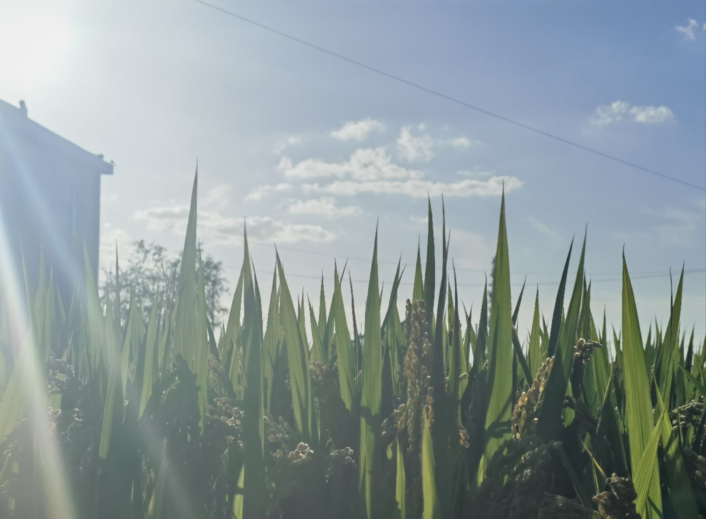

The Approaching Harvest Season
I haven’t been back to my hometown during National Day for some years.
Unlike the winter scenery I often see when I go back, now it is a vibrant autumn view. Some beautiful wildflowers are still blooming, the sky is clear blue, and as far as eyes can see, it is still a sea of green. Of course, the most prominent view is the vast expanse of paddy fields (Oryza sativa) with rice approaching maturity. The golden grains of rice are drooping their heads when gently swinging in the breeze. It signifies that the season of harvest is approaching.
The sunlight is great today, so many golden rays shine down, illuminating the interwoven rice leaves, creating a wonderful play of light and shadow. When the wind comes, shadows chase after each other.
In my mind, the best perspective to watch this is to squat down and look up, facing towards the sun. Sometimes, lowering your posture can help you observe the world better and see familiar things in a different angle, right?

It is not only rice that is lowering their heads, but also the same for sunflowers. The flowers are taller than me, as well as bigger than plates, and their discs are filled with seeds. Perhaps because it is born in a alleyway that doesn’t receive constant sunlight, and perhaps because the burden of its harvest is too heavy, it no longer lifts its head to follow the sun, but staring at the ground. Its stem has a significant bending angle, and this is also sunflower’s way of survival. I know, it’s also a season full of expectation.

After countless days and nights, I finally stand upon this land - the nature world intertwined with the traces of humanity. It recalls me of my distant, natural bond with earth and land, since I have been living in big cities, year after year. Far away from the countryside, from the wild, from the ground beneath my feet.
Reincarnation can begin at any moment - alos this very moment, the moment of harvest. The fruits are harvested, fields are cleared, and new seeds are planted once again.
However, at this moment, I am more willing to let go of all the cluttered thoughts and quietly watch the rare rainbow with the setting sun.